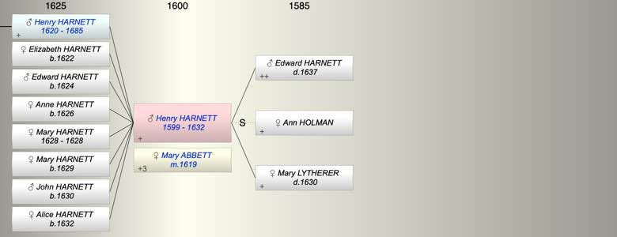

| [Index] |
| Henry HARNETT (1599 - 1632) |
|  |
| b. 1599 at St Laurence |
| m. 06 Jan 1619 Mary ABBETT at St Laurence |
| d. 1632 at St Laurence aged 33 |
| Parents: |
| Edward HARNETT ( - 1637) |
| Mary LYTHERER ( - 1630) |
| Siblings (5): |
| Thomas HARNETT (1592 - ) |
| Jone HARNETT (1594 - ) |
| Ann HARNETT (1597 - ) |
| Mary HARNETT (1598 - ) |
| Edward HARNETT (1603 - 1658) |
| Children (8): |
| Henry HARNETT (1620 - 1685) |
| Elizabeth HARNETT (1622 - ) |
| Edward HARNETT (1624 - ) |
| Anne HARNETT (1626 - ) |
| Mary HARNETT (1628 - 1628) |
| Mary HARNETT (1629 - ) |
| John HARNETT (1630 - ) |
| Alice HARNETT (1632 - ) |
| Grandchildren (5): |
| Edward HARNETT (1643 - ), Mary HARNETT (1646 - ), Ann HARNETT (1649 - ), Thomas HARNETT (1653 - 1678), Peter HARNETT (1658 - 1720) |
| Events in Henry HARNETT (1599 - 1632)'s life | |||||
| Date | Age | Event | Place | Notes | Src |
| 1599 | Henry HARNETT was born | St Laurence | Note 1 | ||
| 06 Jan 1619 | 20 | Married Mary ABBETT | St Laurence | ||
| 1620 | 21 | Birth of son Henry HARNETT | St Laurence | Note 2 | |
| 1622 | 23 | Birth of daughter Elizabeth HARNETT | St Laurence | Note 3 | |
| 1624 | 25 | Birth of son Edward HARNETT | St Laurence | Note 4 | |
| 1626 | 27 | Birth of daughter Anne HARNETT | St Laurence | Note 5 | |
| 1628 | 29 | Birth of daughter Mary HARNETT | St Laurence | bap St Lawrence 15 Jun 1628 | |
| 1628 | 29 | Death of daughter Mary HARNETT | St Laurence | buried 18 Jun 1628 | |
| 1629 | 30 | Birth of daughter Mary HARNETT | St Laurence | Note 6 | |
| 1630 | 31 | Birth of son John HARNETT | St Laurence | Note 7 | |
| 1630 | 31 | Death of mother Mary LYTHERER | St Laurence | Note 8 | |
| 1632 | 33 | Birth of daughter Alice HARNETT | St Laurence | Note 9 | |
| 1632 | 33 | Henry HARNETT died | St Laurence | buried 25 May 1632 St Lawrence | |
| Personal Notes: |
|
Tyler's will for Henry Harnett of MAnston junior who died in 1632, dated 18 May 1632, Probate 11 Jun 1632. It mentions Wife Mary, eldest son Henry, eldest daughter Elizabeth, daughters Ann, Mary, son John, child my wife is now carrying ie Alice. Witness Edward Harnett senior and Edward Harnett junior
see here https://www.ancestry.co.uk/imageviewer/collections/1900/images/31854_A012461-00106?pId=41069 will avaiable ex Canterbury |
| Created on a Mac™ using iFamily for Mac™ on 8 Oct 2023 |